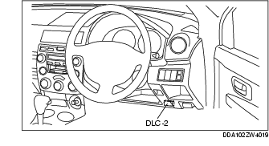

On-board diagnostic test [ZY]
DTC Reading Procedure
1. Perform the necessary vehicle preparation and visual inspection.
2. Connect the WDS or equivalent to the vehicle DLC-2 16-pin connector located in the driver compartment.

3. Retrieve the DTCs using the WDS or equivalent.
Pending Trouble Code Access Procedure
1. Perform the necessary vehicle preparation and visual inspection.
2. Connect the WDS or equivalent to the vehicle DLC-2 16-pin connector located in the driver compartment.

3. Retrieve the pending trouble codes using the WDS or equivalent.
Freeze Frame PID Data Access Procedure
1. Perform the necessary vehicle preparation and visual inspection.
2. Connect the WDS or equivalent to the vehicle DLC-2 16-pin connector located in the driver compartment.

3. Record the freeze frame PID data using the WDS or equivalent.
On-Board System Readiness Tests Access Procedure
1. Perform the necessary vehicle preparation and visual inspection.
2. Connect the WDS or equivalent to the vehicle DLC-2 16-pin connector located in the driver compartment.

3. Monitor the OBD systems operating status using the WDS or equivalent.
PID/DATA Monitor and Record Procedure
1. Perform the necessary vehicle preparation and visual inspection.
2. Connect the WDS or equivalent to the vehicle DLC-2 16-pin connector located in the driver compartment.

3. Access and monitor PIDs using the WDS or equivalent.
Diagnostic Monitoring Test Results Access Procedure
1. Perform the necessary vehicle preparation and visual inspection.
2. Connect the WDS or equivalent to the vehicle DLC-2 16-pin connector located in the driver compartment.

3. Access to the diagnostic monitoring test results and read the test results using the WDS or equivalent.